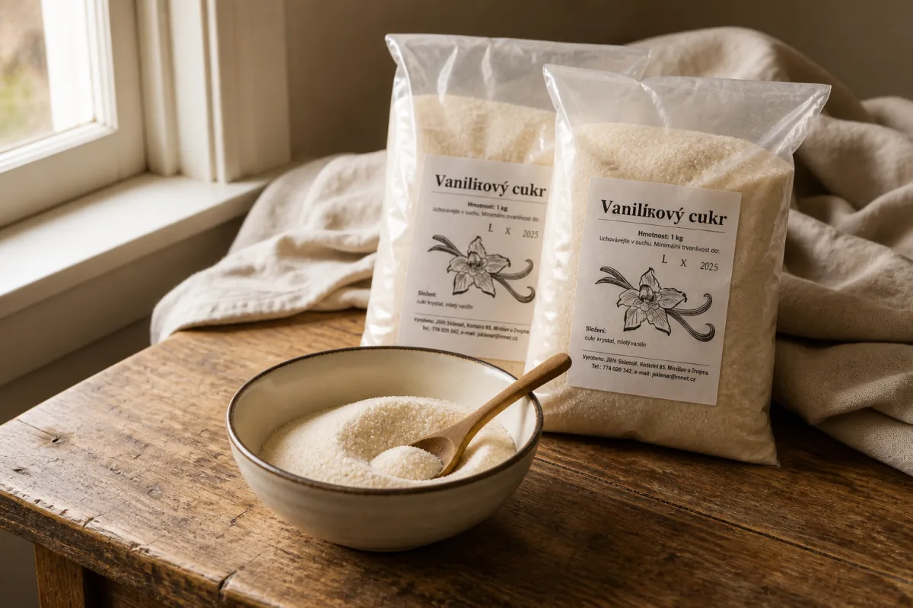

Dumplings like grandma’s. Ready in 15 minutes.
Honest food mixes from the Czech Highlands — potato dumpling doughs, puddings, vanilla sugar and cocoa. Made with KLASA-awarded flour, with no compromise on quality.
What we make
Our products
Five mixes we have supplied to households, restaurants, canteens and pastry shops across Bohemia and Moravia since 2004.

Potato dumpling mix
Our most sought-after product. Classic dumplings, poppy-seed rolls, croquettes and gnocchi from one dough.
5 kg / 250 CZK

Hairy dumpling mix (bosáky)
Traditional-recipe bosáky. Ready in 15 minutes, indistinguishable from home-made.
5 kg / 260 CZK

Gluten-free vanilla pudding
Gluten-free corn starch, natural vanilla taste. For desserts and baking.
1 kg / 60 CZK · 400 g / 30 CZK

Dutch-process cocoa
Dark confectionery cocoa, 21% fat class. Red-brown colour, creamy taste, no added sugar.
500 g / 270 CZK

Vanilla sugar
Finely ground sugar with vanillin aroma. For dough and for dusting pastries.
1 kg / 60 CZK
Family production
Why Jůzlová
Ingredients we know by name
Our KLASA-awarded wheat flour comes from a mill in Havlíčkův Brod, 12 km from our workshop. The corn starch in our puddings is gluten-free.
Speed without compromise
Hairy dumplings (bosáky) are ready in 15 minutes — and you won’t tell them apart from dumplings made the traditional way all afternoon.
Priced below the supermarket
We make quality that costs less than supermarket products of uncertain origin. Potato dumplings: 5 kg for 250 CZK.
Kitchen inspiration
Recipes from our mixes
Proven recipes you can make from our mixes quickly and without extra work.

Poppy-seed rolls (šišky s mákem)
A traditional sweet supper from potato dough: rolls coated in poppy seeds and sugar, drizzled with melted butter.

Pear cake with vanilla pudding
A cake your children will enjoy making with you. Baking is fun twice — once preparing, once tasting.

Strapačky with cabbage and bacon
A Slovak classic from hairy-dumpling mix — halušky with sauerkraut and crispy bacon.

Bebe biscuit slices with chocolate pudding
Want to treat your guests but you’re no Jamie Oliver? These no-bake biscuit slices are for everyone.

Whipped cream roulade
A light dessert in half an hour: the contrast of slightly bitter cocoa and gently sweet whipped cream. No flour — so no gluten either.

Homemade gingerbread (perník)
Cup-measure gingerbread you’ll love for its easy preparation and great taste. No scales needed — a mug is enough.

Potato-and-curd dumplings with strawberries
Summer is here, and with it ripening strawberries. A simple 20-minute recipe that delights the sweetest tooth.

Quick choux wreaths or puffs
One choux pastry for both věnečky and větrníčky: extra butter and a 250 °C start. About 80 pieces on two trays.

Choux wreaths with vanilla cream
Classic věnečky from choux pastry with vanilla buttercream and rum glaze. About 20 pieces.

Cream horns (kremrole)
Flaky pastry tubes filled with glossy Italian meringue. About 35–40 pieces; you will need metal cream-horn tubes.

Mini choux buns (minivětrníčky)
Mini větrníčky from choux pastry with a butter-pudding-curd cream and chocolate glaze. About 40–45 pieces.

Caramel větrníky
Větrníky with vanilla pudding cream, caramel whipped cream and caramel glaze. About 24 medium pieces.

Irish sticky toffee pudding
A moist date pudding with Dutch-process cocoa and Baileys, finished with a salty toffee sauce. Serves 6.
Short answers
Frequently asked questions
The questions people and search engines ask first — who we are, how to order, and what we make.
What is Jůzlová?
Jůzlová is a Czech family workshop making food mixes since 2004. At Kochánov 40 in the Vysočina highlands we produce potato dumpling mix, hairy dumpling mix (bosáky), gluten-free vanilla pudding, vanilla sugar and Dutch-process cocoa. Legal name: Jůzlová s.r.o., company ID 45900124.
Where is Jůzlová and how do I order?
The workshop is Kochánov 40, 582 53, 12 km from Havlíčkův Brod. Order by phone +420 728 466 141 (Jiřina Jůzlová) or +420 607 629 931 (Jiří Jůzl), or e-mail juzlj@seznam.cz. Open daily 8:00–19:00 by phone arrangement.
Do you deliver, and where is pick-up free?
Pick-up in Kochánov or Humpolec is free. Free local delivery covers Havlíčkův Brod, Humpolec, Světlá nad Sázavou, Jihlava and surroundings. Farther away we ship with a contracted courier; postage follows the courier’s tariff.
What are the current Jůzlová prices?
Potato dumpling mix 5 kg / 250 CZK. Hairy dumplings (bosáky) 5 kg / 260 CZK. Gluten-free vanilla pudding 1 kg / 60 CZK or 400 g / 30 CZK. Dutch-process cocoa 500 g / 270 CZK. Vanilla sugar 1 kg / 60 CZK. Restaurants and bakeries get a quote by volume.
Is Jůzlová vanilla pudding gluten-free?
Yes. It is based on corn starch, which contains no gluten. For a chocolate taste, stir in our Dutch-process cocoa — we do not sell a ready-made chocolate pudding mix.
What is the difference between potato dumplings and hairy dumplings?
Potato dumpling mix is classic dough from KLASA-awarded wheat flour and dried potato flakes — for dumplings, poppy-seed rolls, croquettes and gnocchi. Hairy dumplings (bosáky) follow a traditional recipe, ready in 15 minutes, typically served with cabbage and smoked meat or as strapačky/halušky.
Ready to order?
Call or write — pick up in Kochánov or Humpolec, or we’ll deliver to you.
Call or write